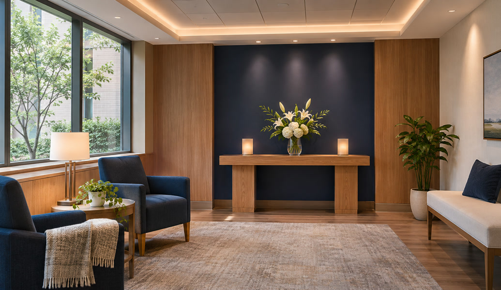
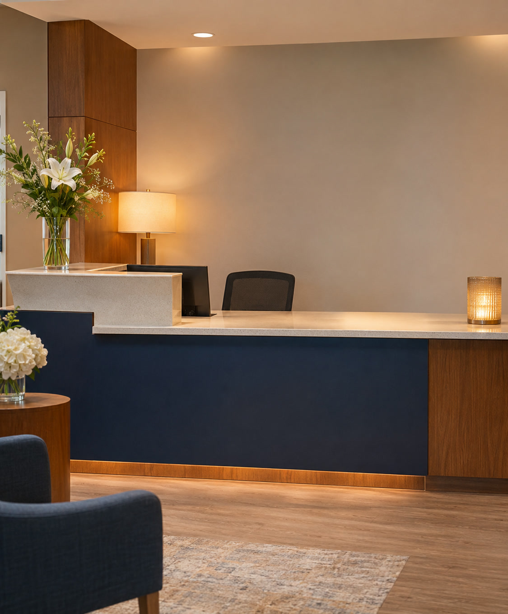

장례식장
장례 시설 · 빈소 이용 항목과 장례 절차를 확인하세요.




빈소 면적
| 구분 | 면적 |
|---|---|
| 특실 | 100평 · 330㎡ |
| 별실 | 84평 · 277.2㎡ |
| 1호실 | 56평 · 184.8㎡ |
| 2호실 | 56평 · 184.8㎡ |
| 3호실 | 56평 · 184.8㎡ |
장례 절차
빈소 선정
사용할 수 있는 분향실과 시설 이용 조건을 확인합니다.
운구
운구 차량은 24시간 운영합니다. 차량 도착 예정 시각과 이용 가능 지역을 장례 안내실에 확인합니다.
안치
유가족이 동행해 안치 호실을 확인합니다.
분향실 계약
장례 절차를 상담하고 분향실 임대차 계약서를 작성합니다.
상주 준비
사망진단서 또는 사체검안서, 영정 사진, 제단 장식과 장의용품을 준비합니다. 발급 서류 부수는 사망 경위에 따라 장례 안내실에 확인합니다.
입관
입관 시간은 오전 10시부터 오후 5시 사이에 정합니다. 사고사인 경우 검시필증 제출 여부를 확인합니다.
장지 이동
종교 예절에 따른 의식을 진행하고 운구 차량과 장지 이동 시간을 확인합니다.
이용 시 유의 사항
- 외부 음식물 반입은 제한합니다.
- 조화는 시설의 폐기 기준을 확인해 주세요.
- 귀중품과 조의금은 직접 보관해 주세요.
- 빈소 이용 조건과 추가 비용을 계약 전에 확인해 주세요.
- 빈소 계약 후 장례 일정과 장례 방법을 담당자와 확인합니다.
- 입관 전에 사망진단서 또는 사체검안서를 제출해야 합니다.
- 입관에 필요한 관, 수의와 부속 용품은 미리 선택합니다.
- 장지 이동 시 종교별 의례와 운구 일정을 확인합니다.
이용 시 확인할 사항
운구와 안치운구 차량 도착 시간을 장례 안내실에 알리고 유가족이 안치 장소를 확인합니다.
계약사용할 빈소와 시설 이용 범위를 확인한 뒤 임대차 계약서를 작성합니다.
준비 서류사망진단서 또는 사체검안서를 준비하고 사고사라면 검시 관련 서류를 확인합니다.
입관 일정입관 예정 시각과 준비 용품은 장례 담당자와 사전에 조율합니다.
발인장지와 운구 차량을 정하고 종교 의례가 있으면 진행 순서를 담당자에게 알립니다.
비용 확인빈소 사용료와 장례 용품 비용을 계약 전 항목별로 확인합니다.
빈소 선택빈소별 이용 가능 여부와 사용료를 계약 전에 확인합니다.
운구 일정차량 이용 시간과 출발 장소를 장례 담당자와 미리 정합니다.
장례 용품관과 수의 등 필요한 용품의 종류와 비용을 신청 전에 확인합니다.
조문객 안내빈소 위치와 주차 방법은 유가족이 확인한 뒤 조문객에게 전달합니다.